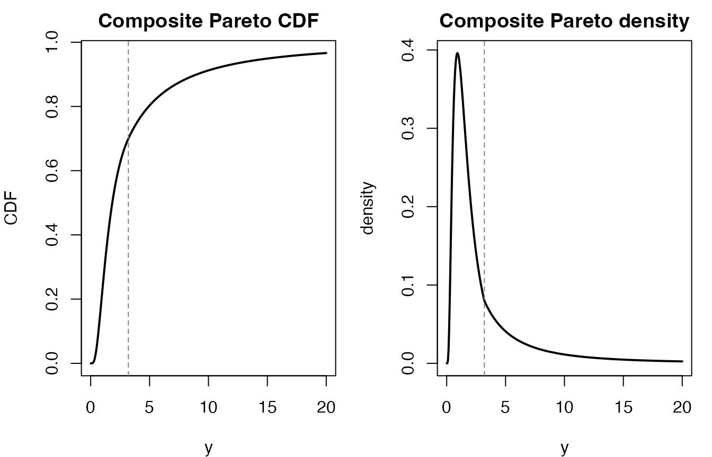
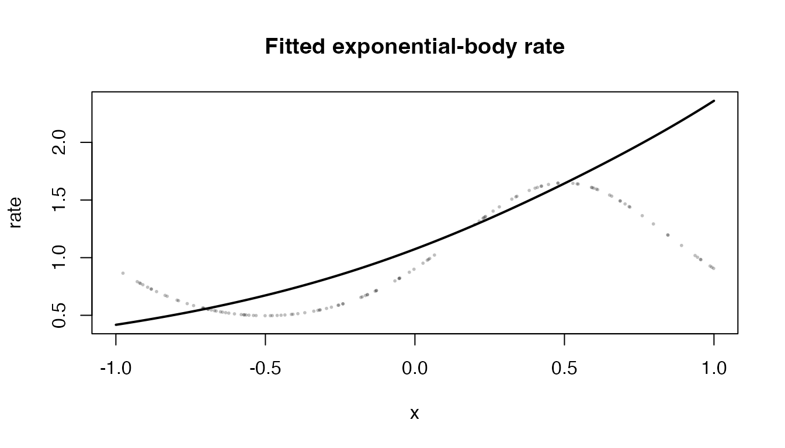

The egpd package includes continuous composite Pareto
distribution helpers and a family = "comppareto" option for
egpd(). This follows the composite construction used in the
CRAN package CompPareto,
where a continuous body distribution is joined to a Pareto tail at a
positive splice point theta.
The current egpd implementation covers two related
tasks:
- unconditional
d/p/q/rcomppareto()utilities for continuous composite Pareto distributions; - additive CompPareto regression through the existing
egpd()GAM framework.
1. The composite Pareto construction
Let G1 and g1 denote the body CDF and
density. In the current package version, the body can be one of:
"lnorm""gamma""weibull""exp"
Above the splice point theta, the model uses a Pareto
tail with shape parameter alpha. The weight is chosen so
that the density is continuous at the splice point. In practice, this
gives a model that behaves like the chosen body below theta
and like a heavy-tailed Pareto model above theta.
2. Standalone distribution utilities
We start with a lognormal body. The standalone helpers use the same
parameterization as the body distribution plus the Pareto tail
parameters alpha and theta.
library(egpd)
args <- list(
spec = "lnorm",
meanlog = 0.4,
sdlog = 0.7,
alpha = 1.7,
theta = 3.2
)
probs <- c(0.5, 0.9, 0.99)
qvals <- do.call(qcomppareto, c(list(p = probs), args))
data.frame(
prob = probs,
quantile = round(qvals, 3),
cdf_back = round(do.call(pcomppareto, c(list(q = qvals), args)), 6)
)
#> prob quantile cdf_back
#> 1 0.50 1.834 0.50
#> 2 0.90 9.021 0.90
#> 3 0.99 44.153 0.99The returned probabilities agree with the inputs, showing the usual
p(q(p)) = p roundtrip.
grid <- seq(0.01, 20, length.out = 400)
cdf_vals <- do.call(pcomppareto, c(list(q = grid), args))
dens_vals <- do.call(dcomppareto, c(list(x = grid), args))
op <- par(mfrow = c(1, 2), mar = c(4, 4, 2, 1))
plot(grid, cdf_vals, type = "l", lwd = 2,
xlab = "y", ylab = "CDF", main = "Composite Pareto CDF")
abline(v = args$theta, lty = 2, col = "grey50")
plot(grid, dens_vals, type = "l", lwd = 2,
xlab = "y", ylab = "density", main = "Composite Pareto density")
abline(v = args$theta, lty = 2, col = "grey50")
par(op)The dashed line marks the splice point theta.
We can also inspect the density numerically just below and just above the splice point.
eps <- 1e-6
data.frame(
x = c(args$theta - eps, args$theta, args$theta + eps),
density = do.call(
dcomppareto,
c(list(x = c(args$theta - eps, args$theta, args$theta + eps)), args)
)
)
#> x density
#> 1 3.199999 0.07977388
#> 2 3.200000 0.07977382
#> 3 3.200001 0.07977378The values are nearly identical, reflecting the continuity built into the construction.
3. Supported body specifications
The unconditional helpers and the GAM family share the same
spec choices. The main difference is the naming convention
for the regression formulas.
data.frame(
spec = c("lnorm", "gamma", "weibull", "exp"),
standalone_parameters = c(
"meanlog, sdlog, alpha, theta",
"shape, scale, alpha, theta",
"shape, scale, alpha, theta",
"rate, alpha, theta"
),
gam_formula_names = c(
"meanlog, logsdlog, logalpha, logtheta",
"logshape, logscale, logalpha, logtheta",
"logshape, logscale, logalpha, logtheta",
"lograte, logalpha, logtheta"
)
)
#> spec standalone_parameters gam_formula_names
#> 1 lnorm meanlog, sdlog, alpha, theta meanlog, logsdlog, logalpha, logtheta
#> 2 gamma shape, scale, alpha, theta logshape, logscale, logalpha, logtheta
#> 3 weibull shape, scale, alpha, theta logshape, logscale, logalpha, logtheta
#> 4 exp rate, alpha, theta lograte, logalpha, logthetaThe exponential-body case is especially convenient for regression examples because it only needs three parameter formulas.
4. Fitting a CompPareto GAM
Here we simulate data from an exponential-body composite Pareto model with a smooth predictor effect on the body rate.
set.seed(22)
n <- 120
x <- sort(stats::runif(n, -1, 1))
rate <- exp(-0.1 + 0.6 * sin(pi * x))
y <- vapply(
seq_len(n),
function(i) rcomppareto(1, spec = "exp", rate = rate[i], alpha = 1.3, theta = 1.5),
numeric(1)
)
dat <- data.frame(y = y, x = x)We then fit the composite Pareto GAM by selecting
family = "comppareto" and passing the body specification
through comppareto.args.
fit <- suppressMessages(
egpd(
list(lograte = y ~ s(x, k = 5), logalpha = ~1, logtheta = ~1),
data = dat,
family = "comppareto",
comppareto.args = list(spec = "exp")
)
)
fit$convergence
#> [1] 0The fitted response-scale parameters can be predicted in the usual way.
pred_grid <- data.frame(x = seq(-1, 1, length.out = 100))
pars_hat <- predict(fit, newdata = pred_grid, type = "response")
head(round(pars_hat, 3))
#> rate alpha theta
#> 1 0.418 1.031 0.89
#> 2 0.426 1.031 0.89
#> 3 0.434 1.031 0.89
#> 4 0.442 1.031 0.89
#> 5 0.451 1.031 0.89
#> 6 0.460 1.031 0.89
plot(pred_grid$x, pars_hat$rate, type = "l", lwd = 2,
xlab = "x", ylab = "rate", main = "Fitted exponential-body rate")
points(x, rate, pch = 16, cex = 0.4, col = grDevices::adjustcolor("black", alpha.f = 0.25))
Quantile prediction also works through the regular
predict.egpd() interface.
round(
predict(
fit,
newdata = data.frame(x = c(-0.75, 0, 0.75)),
type = "quantile",
prob = c(0.5, 0.9, 0.99)
),
3
)
#> q:0.5 q:0.9 q:0.99
#> 1 1.245 9.287 94.156
#> 2 1.245 9.287 94.156
#> 3 1.245 9.287 94.156Randomized quantile residuals are available as well.
5. Intercept-only four-parameter fits
The same interface also supports four-parameter bodies such as the lognormal. In that case, the formula list simply includes an extra body parameter:
fit_lnorm <- egpd(
list(meanlog = y ~ 1, logsdlog = ~1, logalpha = ~1, logtheta = ~1),
data = data.frame(y = y),
family = "comppareto",
comppareto.args = list(spec = "lnorm")
)This is often the simplest way to start when you want to compare different body specifications before adding predictor effects.
6. Current scope
The present CompPareto implementation in egpd is
intentionally focused:
- only the continuous body specifications
"lnorm","gamma","weibull", and"exp"are currently exposed; - the GAM family uses numerical derivatives on the linear predictor scale, so it is usually slower than the native EGPD likelihoods;
- randomized quantile residuals and quantile prediction are supported for the new family;
- discrete composite Pareto helpers from the upstream
CompParetopackage are not yet part of theegpd()GAM layer.
That makes the current implementation a good fit for continuous bulk-plus-tail modeling, while leaving room for broader composite-distribution extensions later.